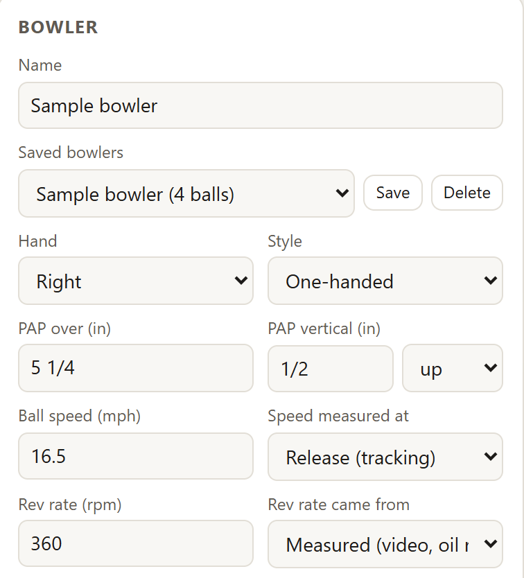
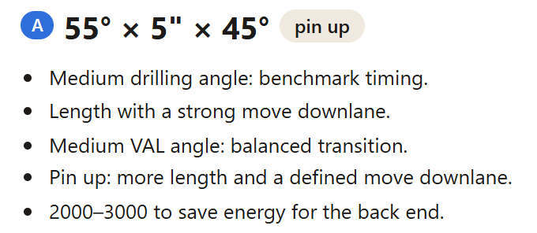
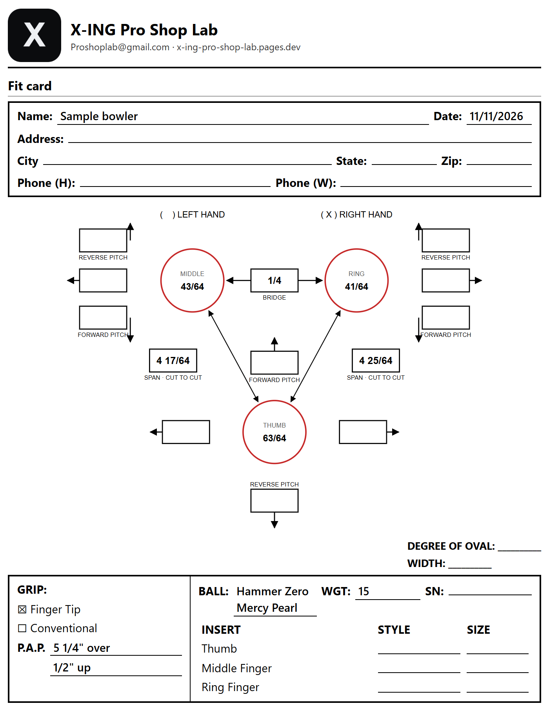
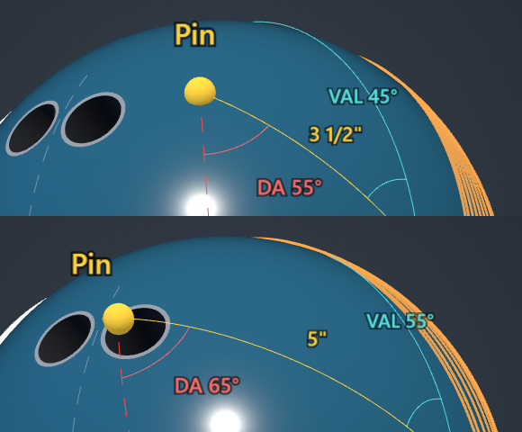
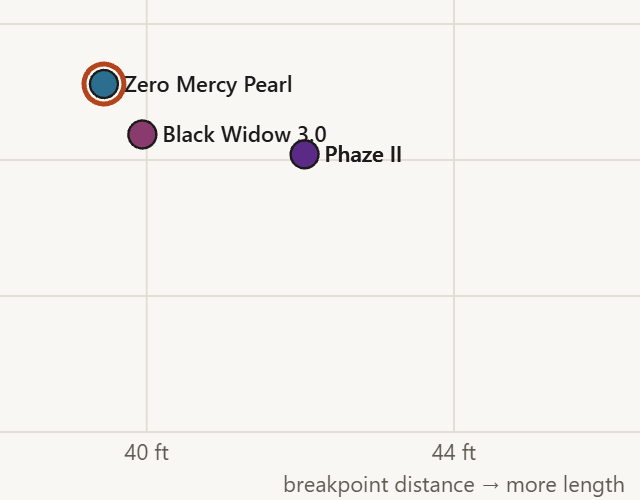
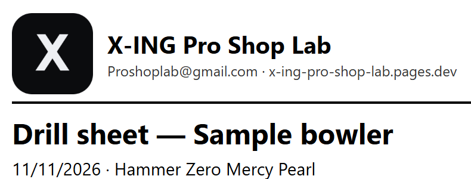

Layout recommendations in both systems
Every layout in Dual Angle and VLS, from the bowler’s speed, revs, tilt and pattern, plus where the pin and the PSA (the ball’s mass bias marker) will land.
For pro shops and serious bowlers. Enter the bowler’s PAP (the point the ball spins around), speed and rev rate. X-ING picks a drilling layout, explains why, and shows how the drilled ball will roll on your lane’s oil.
Start with I bowl I run a pro shop
A sample right-hander: 16.5 mph, 360 rpm, PAP 5 1/4" over and 1/2" up. Type the numbers in, and the layout and its reasons update as you type. Everything saves to the bowler’s profile.


Read it as a 55° drilling angle, the pin 5" from the PAP and a 45° VAL angle. That is Dual Angle, one of the two ways drillers write a layout; VLS writes the same layout as three distances. X-ING gives both.
At the counter: fit specs in 1/64ths, every ball you drill saved with the bowler, drill sheets with your shop’s name and logo, and a customer list. See the pro shop tools
Advanced mode shows each layout in Dual Angle and VLS with the drilled RG and differential, beside the bowler’s fit.

Every layout in Dual Angle and VLS, from the bowler’s speed, revs, tilt and pattern, plus where the pin and the PSA (the ball’s mass bias marker) will land.
Watch the drilled ball roll down a real house or PBA pattern, from behind the bowler or following the ball. Pro

Try a stronger or weaker layout B on the same ball or a different one.

See each ball’s length and hook on this pattern, and let the gap point to your next ball.

The layout, the bowler’s read and the fit on one sheet for the drill press.

A ball maker’s layout chart suggests the same layouts to everyone. X-ING builds yours from your own PAP, speed and rev rate, then shows how the ball will roll on your lane pattern, so you know what to expect before it’s drilled.
Free never expires and needs no card. Pro and Shop prices come with online checkout; until then, email us and we’ll upgrade your account by hand.
For any bowler
For bowlers. Everything in Free, plus
Opens your email. We reply and upgrade your account by hand.
Everything in Pro, plus
Opens your email. We reply and upgrade your account by hand.
| Feature | Free$0 | ProFor bowlers | ShopPro shops |
|---|---|---|---|
| Every plan | |||
| Bowlers | 1 | Up to 5 | Unlimited |
| Balls in each arsenalBalls saved and drilled for a bowler | 9 | Unlimited | Unlimited |
| Every ball in the database567 US balls to pick and try | Included | Included | Included |
| Layout recommendationsDual Angle or VLS, with the reasons | Included | Included | Included |
| PAP and ball motion | Included | Included | Included |
| Drilled ball viewThe drilled ball: holes, pin, PSA and flare rings | Included | Included | Included |
| Top-down lane | Included | Included | Included |
| Arsenal list | Included | Included | Included |
| Import your saved data | Included | Included | Included |
| Pro tools | |||
| Advanced modeBall specs, track and rev measuring, your own line | Not included | Included | Included |
| Auto line and strike chanceBest strike line for the pattern | Not included | Included | Included |
| 3D lane viewThe ball rolling down the pattern | Not included | Included | Included |
| Compare A and BTwo balls or layouts side by side | Not included | Included | Included |
| Arsenal coverage chart | Not included | Included | Included |
| Printed sheetsDrill sheet, spec sheet, fit card | Not included | Included | Included |
| Export your dataJSON backup | Not included | Included | Included |
| Shot log and lane calibration | Not included | Included | Included |
| Shop tools | |||
| Customer listPhone, email and notes for every bowler | Not included | Not included | Included |
| Shop brandingYour name, contact details and logo on printed sheets | Not included | Not included | Included |
When online checkout opens, Pro and Shop will offer monthly or yearly billing with a 14-day free trial. Over a plan’s limit, your data turns read-only; it is never deleted.
With Pro, tap the pins left standing and enter where the ball broke. Each shot retunes the lane, so the next prediction matches what this bowler’s ball actually did.
Tracks strikes and leaves by pattern
Compares each shot with the app’s prediction
Flags a bad release so it never skews the lane
Yes, with no time limit and no card. Free covers one bowler with up to 9 balls in the arsenal, and you can try every ball in the database. You need an account so your bowler and balls are saved.
567 US releases: current balls and those discontinued in the last five years, with specs for each weight.
No. It runs in the browser on a computer, tablet or phone, and keeps a copy on your device so it works offline.
It’s a physics simulation built for comparing layouts, not a guarantee. Log real shots and it tunes the lane to what your ball actually did. Always confirm on the lanes.
Yes. Set each bowler’s hand and style, and the layout and lane follow.
Yes, on the Shop plan. Your shop’s name, contact details and logo print at the top of drill sheets, spec sheets and fit cards.
As many as you like on the Shop plan: each bowler’s fit, arsenal and every ball drilled, plus phone, email and notes in the customer list. If a plan changes, nothing is deleted; data over the limit turns read-only.